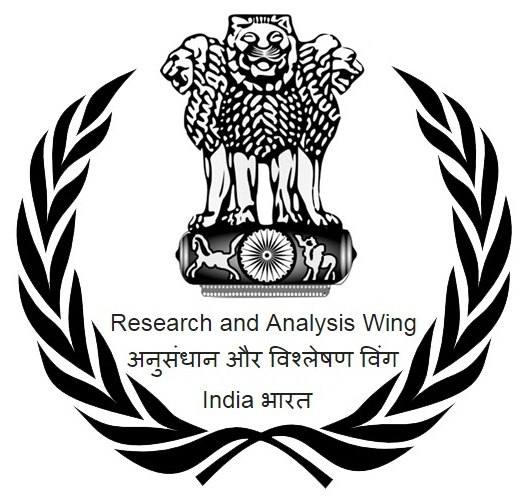

Welcome To R&AW.
The Research and Analysis Wing (abbreviated R&AW; Hindi: अनुसंधान और विश्लेषण विंग) is the foreign intelligence agency of India. The agency's primary function is gathering foreign intelligence, counter-terrorism, counter-proliferation, advising Indian policymakers, and advancing India's foreign strategic interests.[3][4] It is also involved in the security of India's nuclear programme.
During the nine-year tenure of its first Secretary, Rameshwar Nath Kao, R&AW quickly came to prominence in the global intelligence community, playing a role in major events such as accession of the state of Sikkim to India in 1975.[6] Headquartered in New Delhi, R&AW's current chief is Ravi Sinha.[7][8] He succeeded Samant Goel. The head of R&AW is designated as the Secretary (Research) in the Cabinet Secretariat, and is under the authority of the Prime Minister of India without parliamentary oversight. On an administrative basis, the Director reports to the Cabinet Secretary, who reports to the Prime Minister.
Background (1923–69)
Prior to the inception of the Research and Analysis Wing, overseas intelligence collection was primarily the responsibility of the Intelligence Bureau (IB), which was created by the Government of India during British Raj. In 1933, sensing the political turmoil in the world which eventually led to the Second World War, the Intelligence Bureau's responsibilities were increased to include the collection of intelligence along India's borders.
In 1947, after independence, Sanjeevi Pillai took over as the first Indian Director of the IB. Having been depleted of trained manpower by the exit of the British after Indian independence, Pillai tried to run the bureau on MI5 lines. In 1949, Pillai organised a small foreign intelligence operation, but the Indian debacle in the Sino-Indian War of 1962 showed it to be ineffective. Foreign intelligence failure during the 1962 Sino-Indian War led then-Prime Minister Jawaharlal Nehru to order a dedicated foreign intelligence agency to be established.[3] After the Indo-Pakistani war of 1965, the Chief of Army Staff, General Joyanto Nath Chaudhuri, also called for more intelligence-gathering.[3][4] Around the end of 1966 the concept of a separate foreign intelligence agency began to take concrete shape.